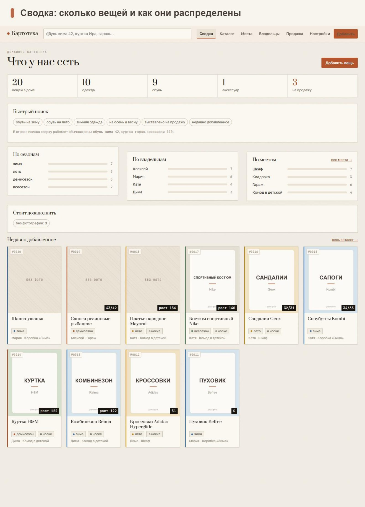
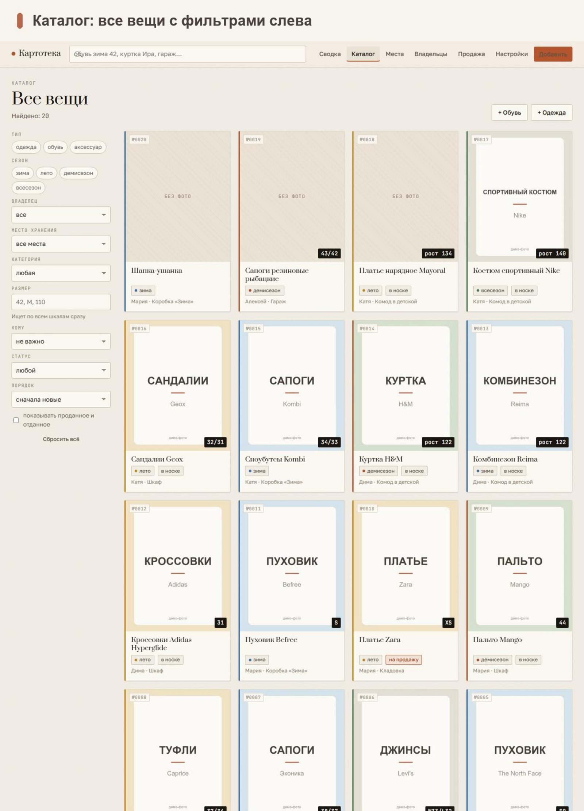
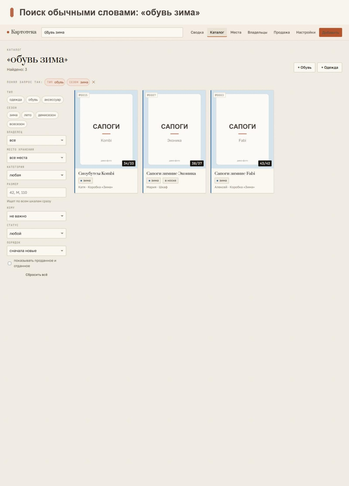
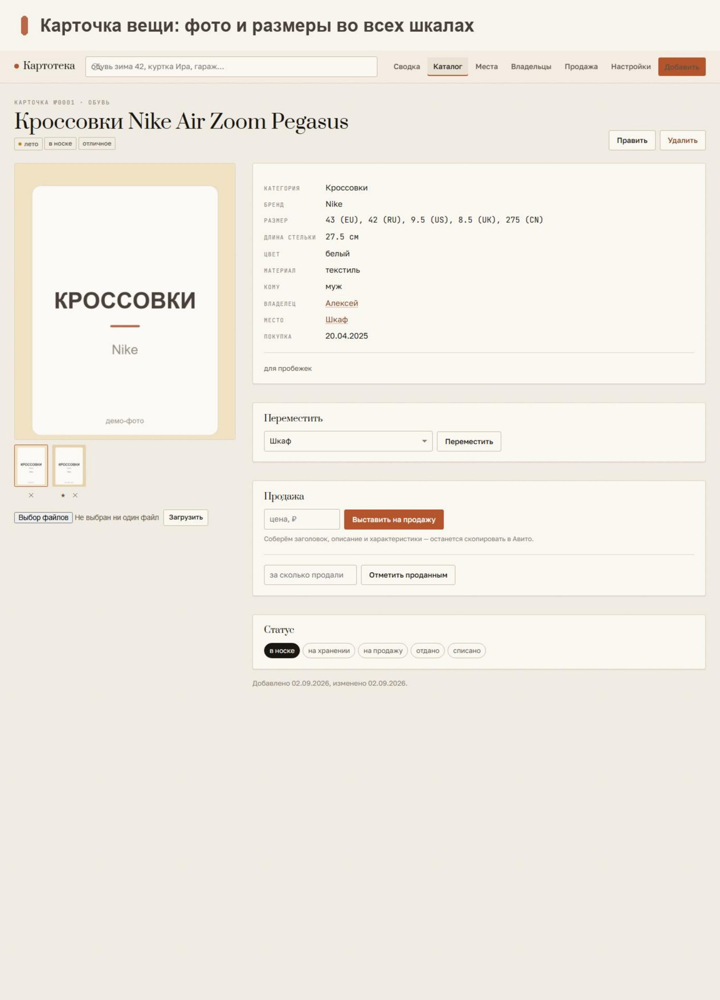
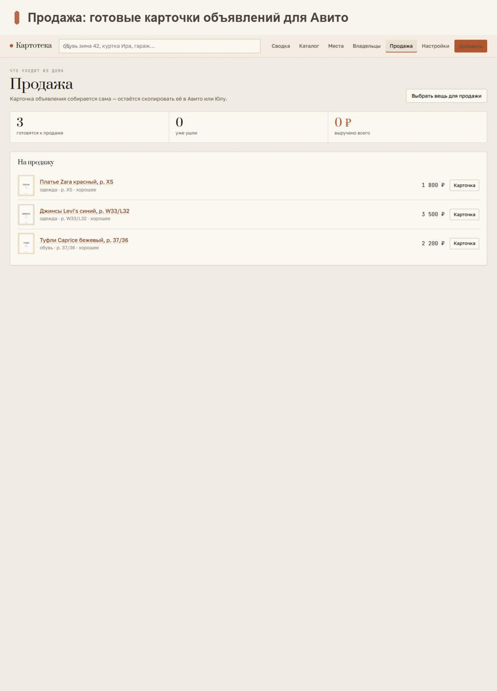
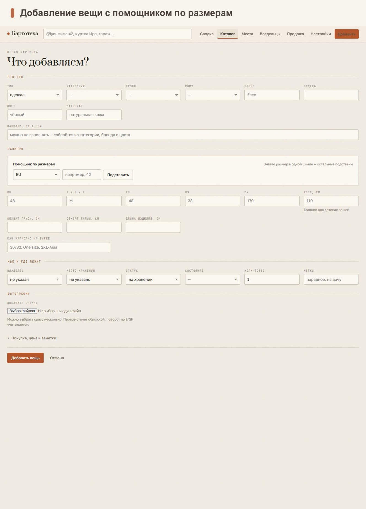

Домашний учёт вещей: что есть в семье, где лежит, кому принадлежит и что пора
продать. Работает на домашнем компьютере, открывается с телефона по Wi-Fi.
Ниже — снимки рабочих экранов.
Поиск обычными словами«обувь зима 42», «куртка Ира» — без фильтров и категорий.
Места храненияШкаф, кладовка, гараж, комод в детской — видно, где искать.
Телеграм-ботДобавить вещь и найти нужное прямо из переписки.
Свой компьютерНичего не уходит наружу: база и фотографии остаются дома.

01 — Сводка: сколько вещей и как они распределены

02 — Каталог: все вещи с фильтрами

03 — Поиск обычными словами

04 — Карточка вещи

05 — Места хранения

06 — Продажа: что выставлено и в каком статусе
Это демонстрация. Снимки сделаны на учебной базе: вещи и владельцы
показаны для примера. Картотеку разворачиваем под вашу семью — со своими
местами хранения, владельцами и телеграм-ботом.